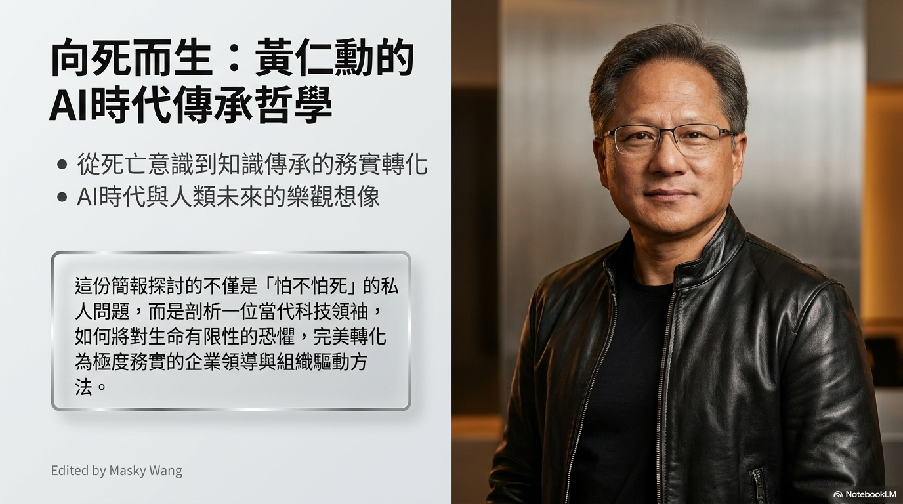
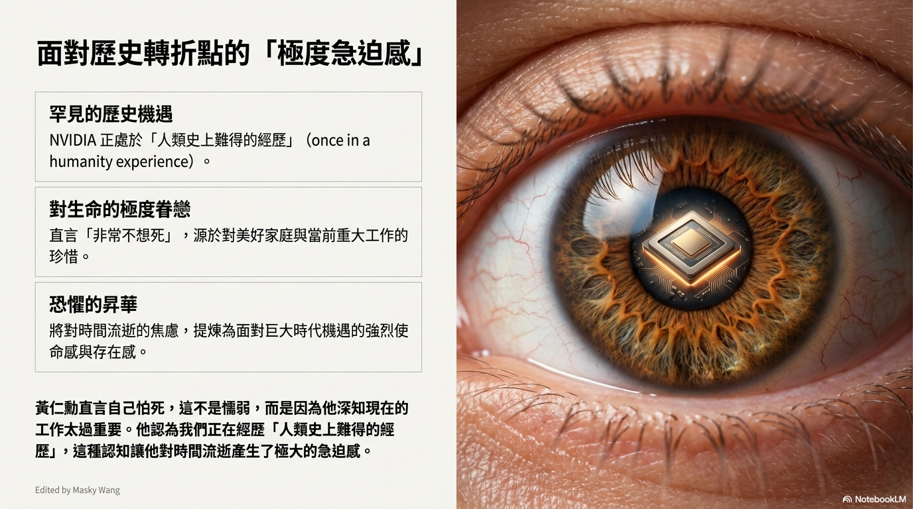
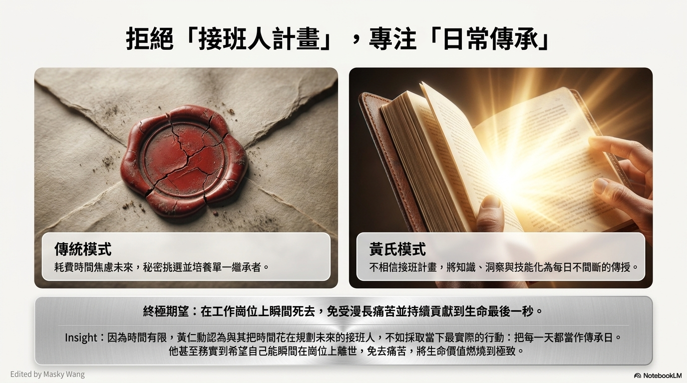
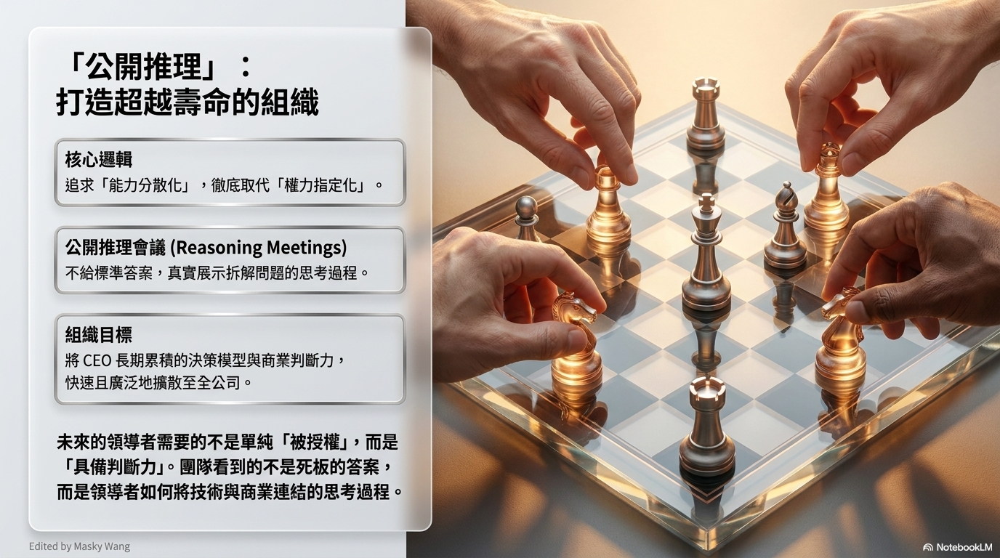
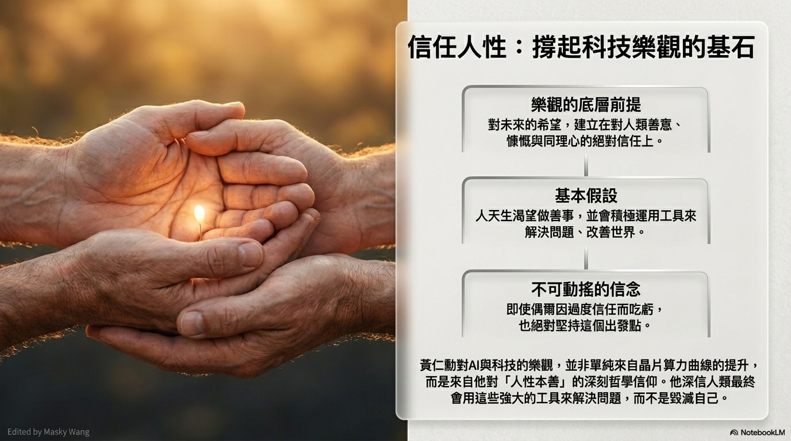
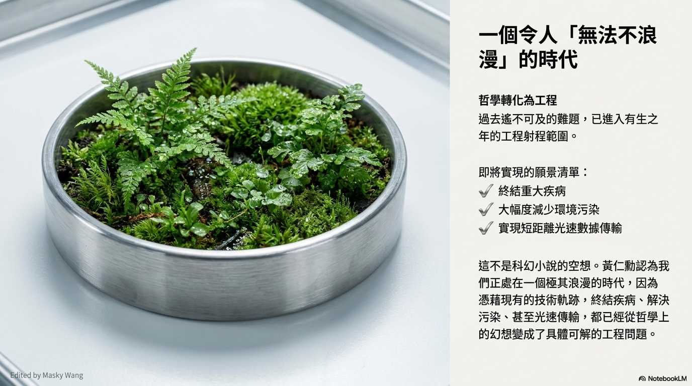
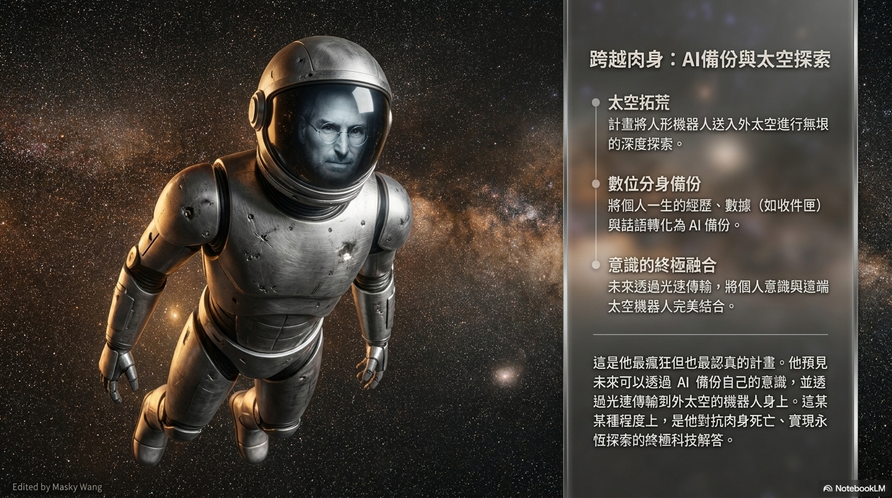
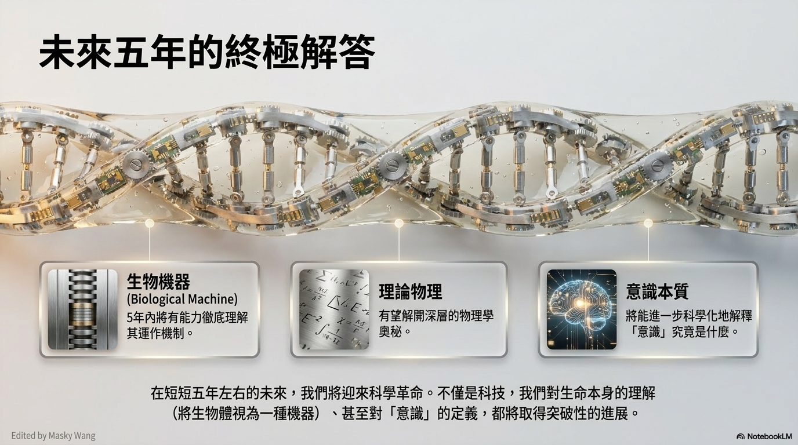
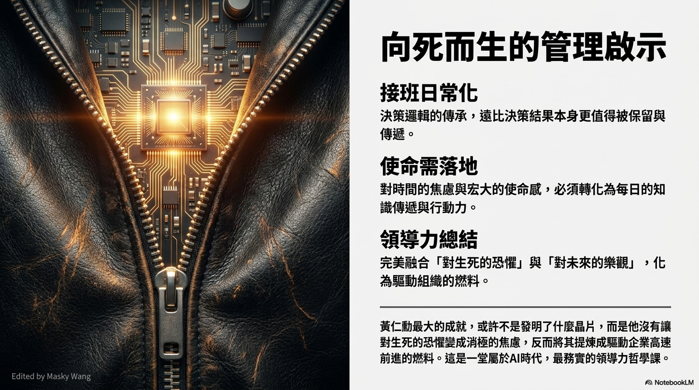

我常常說，我非常不想死。這不是出於懦弱，而是深深眷戀著家人，以及手邊正在做的這些事。我們正處在人類歷史上極為罕見的時刻。當你意識到自己正經歷著「一旦錯過就不再」的時代，看著時間流逝，那份急迫感，會讓你對生命生出無比的敬畏與珍惜。

總有人問起接班的安排。坦白說，我不相信什麼傳統的「接班人計畫」。與其把時間花在秘密挑選、培養下一個繼承者，去焦慮那些我們根本無法掌控的未來，不如把目光收回，安放在當下。因為時間真的有限，我們唯一能握緊的，只有今天。
所以我把每一天，都當作是傳承的日子。我不保留，也不等待所謂的適當時機。如果可以，我最大的心願，是在工作崗位上瞬間離去，沒有漫長的痛苦。在那一刻到來之前，把我的知識、洞察和技能，化作每天不間斷的傳授，這才是最真實的延續。
「我把每一天，都當作是傳承的日子。不保留，也不等待所謂的適當時機。」

在公司裡，我推行一種公開推理的會議。我不直接給標準答案，因為答案會過時，但思考的過程不會。未來的領導者需要的不是被賦予某個頭銜，而是具備真實的判斷力。我希望團隊看到的，是我如何把技術與商業連結起來的思考脈絡，讓這份能力，自然地流淌到每個角落。

面對死亡的急迫，也讓我對時間有著極致的渴望。在科技的世界裡，資訊唯一的價值，就在於它流動的速度。我從不囤積資訊，即便是我自己都還沒完全消化的新知，我也會立刻分享出去。因為只有讓所有人以光速同步，我們才能一起面對這個複雜的世界。
也許你會問，在這樣快速又充滿變數的時代，為什麼我還能保持樂觀？這一切的底層邏輯，其實來自於我對人性的信任。我始終相信，人們天生是善良的、慷慨的，並且渴望幫助他人。這是我看待這個世界，永遠不變的出發點。
即便有時候，過度的信任可能會讓我們吃點虧，但我依然堅持這份信念。因為我相信，人類最終會運用這些強大的工具去解決難題、改善世界，而不是走向毀滅。這種對人性的樂觀，溫柔地支撐起了我對科技未來的無限希望。
「我始終相信，人們天生是善良的、慷慨的。這是我看待這個世界，永遠不變的出發點。」

從這個角度看過去，我們現在正處在一個讓人無法不浪漫的時代。過去那些只能寫在科幻小說裡、或者留在哲學討論裡的幻想，現在都變成了具體可以解決的工程問題。像是終結重大疾病、大幅減少污染，甚至是光速的數據傳輸，這些都即將在我們的有生之年，化為現實。

如果你看得夠遠，大約在接下來的短短五年裡，我們甚至有機會迎來一場深刻的科學革命。我們將有能力徹底理解生物機器的運作機制，去解開理論物理最深層的奧秘，甚至是去觸碰那個最核心的問題——「意識」究竟是什麼。

我心裡一直有個充滿科幻色彩的狂想：有一天，我們要把人形機器人送上無垠的太空。而我一生的經歷、說過的話、做過的事，甚至是我的意識，都可以化為數據備份。透過光速傳輸，將這些靈魂的碎片與遠在太空的機器人結合。那樣，生命就有了另一種形式的永恆。

說到底，我所做的一切，或許不是為了發明多麼厲害的晶片。而是我沒有讓對死亡的恐懼變成消極的焦慮，我把它提煉成了燃料，推動著一切全速前進。這是一堂向死而生的課，把宏大的使命，輕輕落實在每一天的行動裡，平靜，但燃燒到最後一秒。
